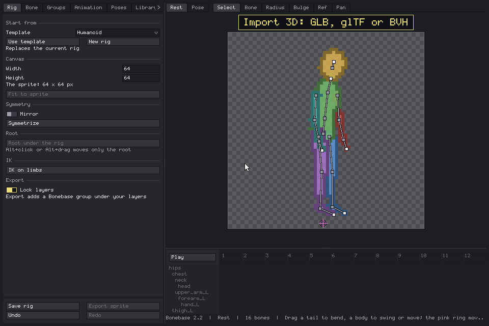
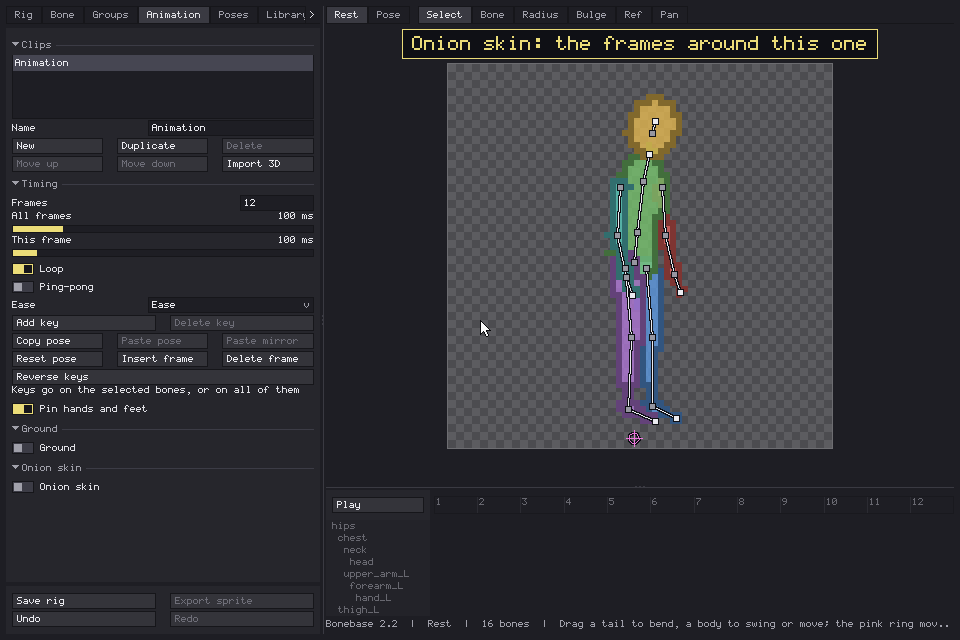
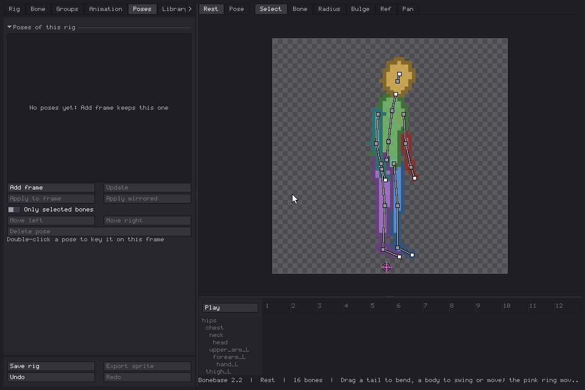
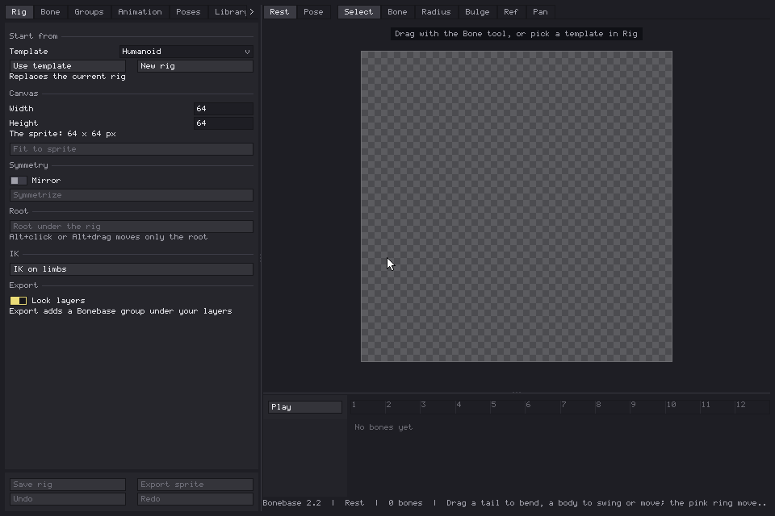

Bonebase 2.2 is out! Last time I promised one thing a week and gave you a roadmap with a single date on it, because I've met me. Well, I've met me again, and it turns out I can't stop adding stuff once it works. So here's what landed since 1.0, and what I'm doing next.
Short version for anyone new: you build a skeleton, give it a rough body, animate it with live IK, and export it to Aseprite as layers to draw over. It does the part of animation I'm bad at, which is most of it.
Landed: reference images (1.1)
The one from last devlog. Load a drawing, a photo or another sprite under the rig, from a file, the clipboard or an open sprite, and build or pose the skeleton on top of it. Position, scale, rotation and opacity can be keyed, or you can put a different picture on single frames to match your key poses. It's saved in the sprite and never exported, so your messy sketches stay between us.
Landed: Import 3D

This one wasn't on the roadmap at all. I wanted walk cycles without animating every frame by hand, and one thing led to another. Open a GLB, glTF or BVH file, turn the camera to the side you want, and your rig copies the motion. Or let Bonebase build a new rig from the file's skeleton, groups included.
- In place keeps the character on the spot, so a walk that wanders off doesn't take your rig with it.
- Depth order swaps which arm or leg goes in front when the body turns.
- Marked frames: Shift+click the frames you actually like, pick how long the clip should be, and you get a clip with keys only on those frames. A long mocap walk becomes a short pixel art walk, which is what we wanted all along.
Landed: a proper onion skin

The old onion skin was one ghost before and one after, take it or leave it. Now you choose how many frames back and forward, keyframes only or every N frames, the colors on each side, opacity and fade, and the style: tint, outline, skin or just the bones. It even wraps around the loop, so frame 1 can see frame 8 coming.
Landed: poses and your own rig library

This was "planned" last time, and now it's real. The Poses tab keeps poses of a rig with thumbnails: drop one on any frame, mirrored if you want the other leg, or only on the bones you selected. The Library tab keeps whole rigs, with all their clips and poses, so you can open them in any sprite. After that, one Save rig button keeps the library copy up to date, instead of saving over the same name every time like I used to.
Landed: more templates

Fourteen new starting points, numbered because naming them was taking longer than making them. Stocky, tall and slim, narrow waist, brute, child, four more side views (including a hunched one) and chibis from two heads tall to round, two of them from the side. Same bones and names as the originals, so IK, mirror and Import 3D work the same on all of them.
And the small stuff
- Groups: you decide which bones go on which layer, and a bone can be in none.
- A working canvas bigger than your sprite, with a checker, a color, your sprite or one of its layers as the background.
- A root ring that carries the whole rig. Alt+click moves only the ring, for when it ended up somewhere silly.
- Pose and IK finally agree with each other on what a key is.
- Dialogs no longer hide behind the main window. You know the one: click outside, the question goes behind, nothing responds, Esc or restart. Gone.
- Opening the Library while an animation was playing could freeze Aseprite. That's fixed too, and I'm sorry if it got you.
Next: an animation library
Still the plan, still not done. I've started on the first batch of ready-made clips (walk, run, jump, roll, dash, push), but they're not in this version yet. When they're in, you'll drop them on your rig and tweak, instead of starting from a blank timeline.
Planned: your drawing on a bone
Draw a hand, a sword, a hat or a whole head in Aseprite, pin it to a bone, and it moves and turns with it. The rough skin stays for the body you draw over, and the parts you already drew ride along with the animation. Think cutout animation, without the scissors.
Planned: rigs from a silhouette
Start from the outline of a drawing and get a rig that fits it. Still an idea living in my notes, and it keeps being pushed down by things that were supposed to be small. I'll write about it when I know how it should work.
If one of these matters more to you, or something you need is missing, tell me in the comments. The order can change, and your ideas are probably better than my knees. Still.